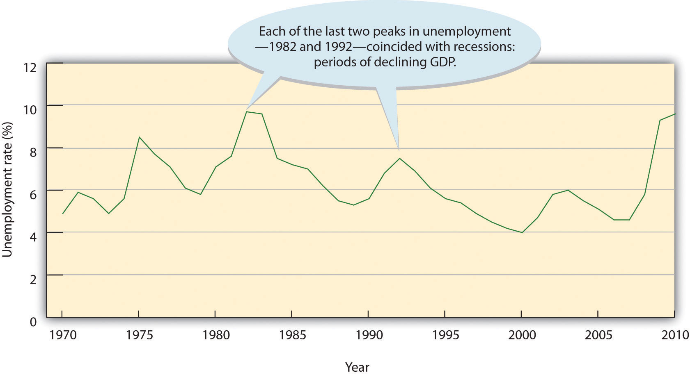
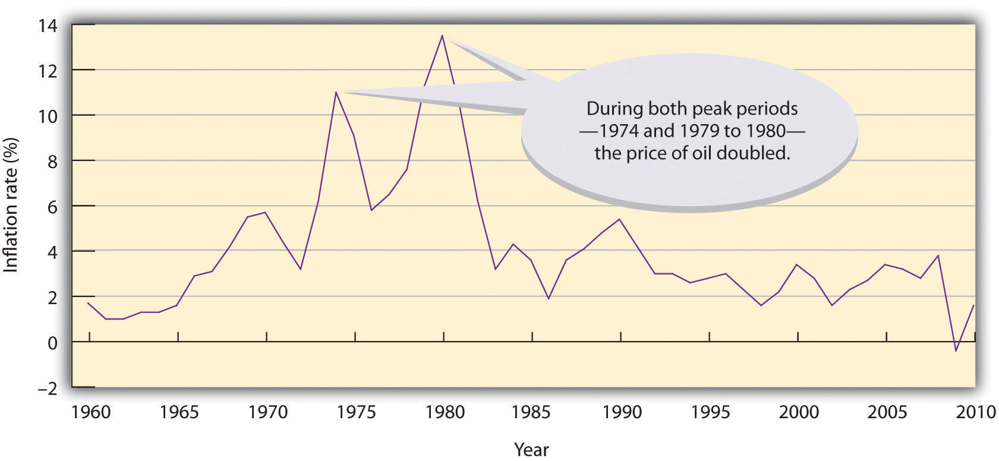

Every day, we are bombarded with economic news. We’re told that the economy is struggling, unemployment is high, home prices are low, and consumer confidence is down. As a student learning about business, and later as a business manager, you need to understand the nature of the U.S. economy and the terminology that we use to describe it. You need to have some idea of where the economy is heading, and you need to know something about the government’s role in influencing its direction.
All the world’s economies share three main goals:
Let’s take a closer look at each of these goals, both to find out what they mean and to show how we determine whether they’re being met.
One purpose of an economy is to provide people with goods and services—cars, computers, video games, houses, rock concerts, fast food, amusement parks. One way in which economists measure the performance of an economy is by looking at a widely used measure of total output called gross domestic product (GDP)Measure of the market value of all goods and services produced by a nation’s economy in a given year.. GDP is defined as the market value of all goods and services produced by the economy in a given year. In the United States, it’s calculated by the Department of Commerce. GDP includes only those goods and services produced domestically; goods produced outside the country are excluded. GDP also includes only those goods and services that are produced for the final user; intermediate products are excluded. For example, the silicon chip that goes into a computer (an intermediate product) would not count, even though the finished computer would.
By itself, GDP doesn’t necessarily tell us much about the state of the economy. But change in GDP does. If GDP (after adjusting for inflation) goes up, the economy is growing. If it goes down, the economy is contracting.
The economic ups and downs resulting from expansion and contraction constitute the business cyclePattern of expansion and contraction in an economy.. A typical cycle runs from three to five years but could last much longer. Though typically irregular, a cycle can be divided into four general phases of prosperity, recession, depression (which the cycle generally skips), and recovery:
To keep the economy going strong, people must spend money on goods and services. A reduction in personal expenditures for things like food, clothing, appliances, automobiles, housing, and medical care could severely reduce GDP and weaken the economy. Because most people earn their spending money by working, an important goal of all economies is making jobs available to everyone who wants one. In principle, full employmentCondition under which about 95 percent of those who want to work are employed. occurs when everyone who wants to work has a job. In practice, we say that we have “full employment” when about 95 percent of those wanting to work are employed.
The U.S. Department of Labor tracks unemployment and reports the unemployment ratePercentage of the total labor force that’s currently unemployed and actively seeking work.: the percentage of the labor force that’s unemployed and actively seeking work. The unemployment rate is an important measure of economic health. It goes up during recessionary periods because companies are reluctant to hire workers when demand for goods and services is low. Conversely, it goes down when the economy is expanding and there is high demand for products and workers to supply them.
Figure 1.10 "The U.S. Unemployment Rate, 1970–2010" traces the U.S. unemployment rate between 1970 and 2010. If you want to know the current unemployment rate, go to the CNNMoney Web site (CNNMoney.com) and click on “Economy” and then on “Job Growth.”
Figure 1.10 The U.S. Unemployment Rate, 1970–2010
A third major goal of all economies is maintaining price stabilityConditions under which the prices for products remain fairly constant.. Price stability occurs when the average of the prices for goods and services either doesn’t change or changes very little. Rising prices are troublesome for both individuals and businesses. For individuals, rising prices mean you have to pay more for the things you need. For businesses, rising prices mean higher costs, and, at least in the short run, businesses might have trouble passing on higher costs to consumers. When the overall price level goes up, we have inflationRise in the overall price level.. Figure 1.11 "The U.S. Inflation Rate, 1960–2010" shows inflationary trends in the U.S. economy since 1960. When the price level goes down (which rarely happens), we have deflationDecrease in overall price level..
Figure 1.11 The U.S. Inflation Rate, 1960–2010
The most widely publicized measure of inflation is the consumer price index (CPI)Index that measures inflation by measuring the prices of goods purchased by a typical consumer., which is reported monthly by the Bureau of Labor Statistics. The CPI measures the rate of inflation by determining price changes of a hypothetical basket of goods, such as food, housing, clothing, medical care, appliances, automobiles, and so forth, bought by a typical household.
The CPI base period is 1982 to 1984, which has been given an average value of 100. Table 1.1 "Selected CPI Values, 1950–2010" gives CPI values computed for selected years. The CPI value for 1950, for instance, is 24. This means that $1 of typical purchases in 1982 through 1984 would have cost $0.24 in 1950. Conversely, you would have needed $2.18 to purchase the same $1 worth of typical goods in 2010. The difference registers the effect of inflation. In fact, that’s what an inflation rate is—the percentage change in a price index.
You can find out the current CPI by going to the CNNMoney Web site (CNNMoney.com) and click on “Economy” and then on “Inflation (CPI).”
Table 1.1 Selected CPI Values, 1950–2010
| Year | 1950 | 1960 | 1970 | 1980 | 1990 | 2000 | 2001 | 2002 |
| CPI | 24.1 | 29.1 | 38.8 | 82.4 | 130.7 | 172.2 | 177.1 | 179.9 |
| Year | 2003 | 2004 | 2005 | 2006 | 2007 | 2008 | 2009 | 2010 |
| CPI | 184.0 | 188.9 | 195.3 | 201.6 | 207.3 | 215.3 | 214.15 | 218.1 |
In the previous section, we introduced several measures that economists use to assess the performance of the economy at a given time. By looking at changes in GDP, for instance, we can see whether the economy is growing. The CPI allows us to gauge inflation. These measures help us understand where the economy stands today. But what if we want to get a sense of where it’s headed in the future? To a certain extent, we can forecast future economic trends by analyzing several leading economic indicators.
An economic indicatorStatistic that provides information about trends in the economy. is a statistic that provides valuable information about the economy. There’s no shortage of economic indicators, and trying to follow them all would be an overwhelming task. Thus, economists and businesspeople track only a select few, including those that we’ll now discuss.
Statistics that report the status of the economy a few months in the past are called lagging economic indicatorsStatistical data that measure economic trends after the overall economy has changed.. One such indicator is average length of unemployment. If unemployed workers have remained out of work for a long time, we may infer that the economy has been slow. Indicators that predict the status of the economy three to twelve months in the future are called leading economic indicatorsStatistical data that predict the status of the economy three to twelve months in the future.. If such an indicator rises, the economy is likely to expand in the coming year. If it falls, the economy is likely to contract.
To predict where the economy is headed, we obviously must examine several leading indicators. It’s also helpful to look at indicators from various sectors of the economy—labor, manufacturing, and housing. One useful indicator of the outlook for future jobs is the number of new claims for unemployment insurance. This measure tells us how many people recently lost their jobs. If it’s rising, it signals trouble ahead because unemployed consumers can’t buy as many goods and services as they could if they had paychecks.
To gauge the level of goods to be produced in the future (which will translate into future sales), economists look at a statistic called average weekly manufacturing hours. This measure tells us the average number of hours worked per week by production workers in manufacturing industries. If it’s on the rise, the economy will probably improve. For assessing the strength of the housing market, building permits is often a good indicator. An increase in this statistic—which tells us how many new housing units are being built—indicates that the economy is improving. Why? Because increased building brings money into the economy not only through new home sales but also through sales of furniture and appliances to furnish them.
Finally, if you want a measure that combines all these economic indicators, as well as others, a private research firm called the Conference Board publishes a U.S. leading index. To get an idea of what leading economic indicators are telling us about the state of the economy today, go to the Conference Board site at http://www.conference-board.org and click on “U.S. Indicators” and then “leading economic index.”
The Conference Board also publishes a consumer confidence indexMeasure of optimism that consumers express about the economy as they go about their everyday lives. based on results of a monthly survey of five thousand U.S. households. The survey gathers consumers’ opinions on the health of the economy and their plans for future purchases. It’s often a good indicator of consumers’ future buying intent. For information on current consumer confidence, go to the Conference Board site at http://www.conference-board.org and click on “consumer confidence.”
Congratulations! You entered a sweepstakes and won a fantastic prize: a trip around the world. There’s only one catch: you have to study the economy of each country (from the list below) that you visit, and identify the current phase of its business cycle. Be sure to explain your responses.